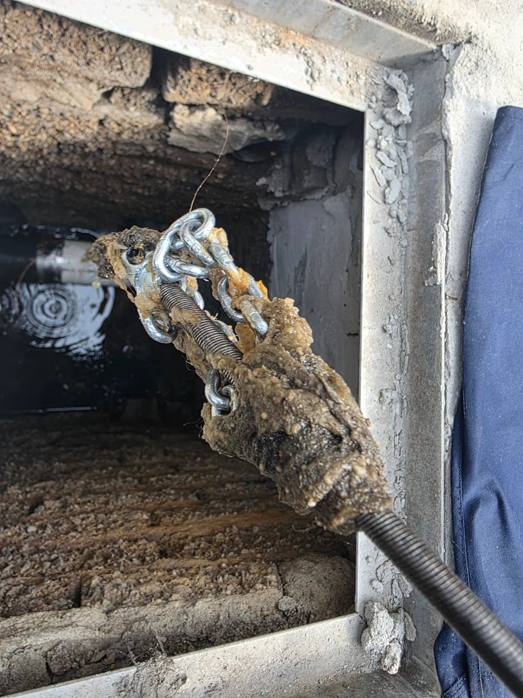
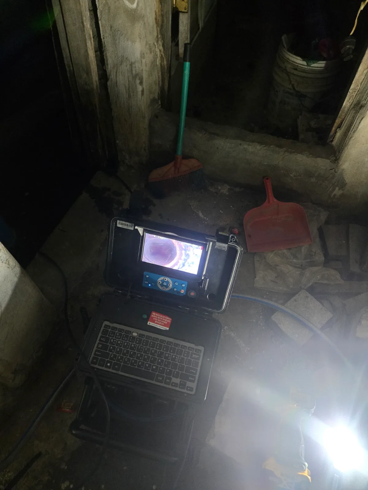

강동구 명일동 하수구막힘 | 싱크대 배수관에 쌓인 기름때 제거 사례
명일동 하수구막힘으로 소개하는 이번 작업 대상은 싱크대 배수관입니다. 배관 안의 많은 기름때가 물길을 좁히고 있어 샤프트 반복 작업과 물을 흘리는 추가 세척으로 배수 기능을 회복했습니다.
서울 · 강동구 · 하수구막힘
강동구에서 실제로 해결한 하수구막힘 사례를 바탕으로 하수구뚫는업체를 찾을 때 확인할 증상과 작업 방법을 정리했습니다. 바닥 배수구 역류, 물이 잘 빠지지 않는 하수구, 여러 배수구의 동시 막힘, 악취와 반복되는 배수 불량 등은 원인이 서로 다를 수 있어 현장 진단 후 필요한 범위를 안내합니다.
바닥 배수구 역류, 물이 잘 빠지지 않는 하수구, 여러 배수구의 동시 막힘, 악취와 반복되는 배수 불량처럼 비슷해 보이는 증상도 원인 구간은 다를 수 있습니다. 신라건축설비는 실제 출동 기록을 기준으로 증상·원인·사용 장비·작업 결과를 공개합니다.
주요 점검·작업: 배관내시경·샤프트·석션·고압세척과 공용배관 점검
하수구막힘·하수구뚫는업체 전체 서비스와 지역별 사례 보기 →명일동 하수구막힘으로 소개하는 이번 작업 대상은 싱크대 배수관입니다. 배관 안의 많은 기름때가 물길을 좁히고 있어 샤프트 반복 작업과 물을 흘리는 추가 세척으로 배수 기능을 회복했습니다.

명일동 하수구업체에 싱크대 배수 문제를 문의할 때는 증상과 함께 점검·보양·작업·완료 확인 범위를 살펴보세요. 이번 사례는 신라건축설비의 명일동 기름때 제거 사례를 바탕으로 상담할 항목을 정리합니다.

강동구 성내동 하수구막힘 약 6개월 전에도 오수관 작업을 진행했던 성내동 현장으로 배관 구배가 거의 확보되지 않은 상태에서 휴지와 이물질이 다시

강동구 천호동 하수구막힘 화장실 바닥 배수구 역류를 내시경으로 점검하고 석션 및 샤프트 작업 후 정상 통수 확인